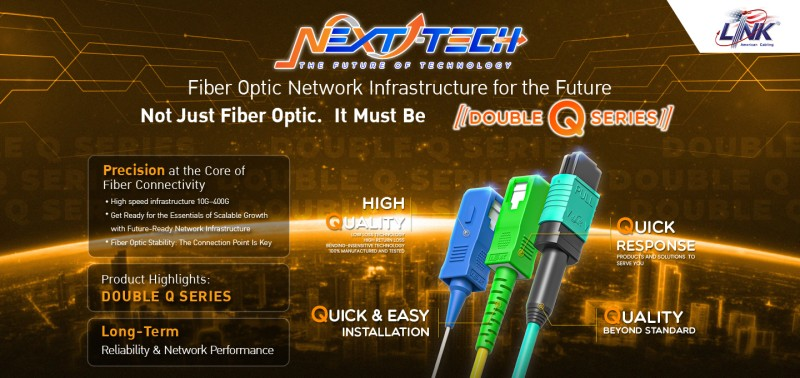

Not Just Fiber Optic. It Must Be
Double Q Series
"High Quality" & "Quick Response"
เกี่ยวกับงานสัมมนา
งานสัมมนาออนไลน์เกี่ยวกับ Fiber Optic Network Infrastructure for the Future
ครอบคลุมเรื่อง High speed infrastructure 10G–400G, การเลือกใช้งาน Fiber Optic ให้เหมาะสม
และปัจจัยที่ช่วยเพิ่มประสิทธิภาพระบบเครือข่ายในระยะยาว
Seminar Topics
1. Precision at the Core of Fiber
Connectivity
- High speed infrastructure 10G–400G
- Get Ready for the Essentials of Scalable Growth with Future-Ready Network
Infrastructure
- Fiber Optic Stability: The Connection Point Is Key
2. Product Highlights: DOUBLE Q
SERIES
- Fiber Optic Pigtail vs Patch Cord —
แนวทางการเลือกใช้งานให้เหมาะกับลักษณะงานติดตั้งและโครงสร้างงานระบบ
- ความแตกต่างระหว่าง Single Mode และ Multi Mode
- Connector ประเภท LC, SC และ MPO —
เลือกให้เหมาะกับการใช้งานใน Data Center และ Enterprise Network
- ความสำคัญของค่า Insertion Loss และ Return Loss
ต่อประสิทธิภาพและความเสถียรของระบบในระยะทางที่แตกต่างกัน
3. Long-Term Reliability &
Network Performance
- ปัจจัยสำคัญที่ช่วยลด Network Degradation ในระยะยาว
- ผลกระทบของคุณภาพสายและจุดเชื่อมต่อ ต่อประสิทธิภาพระบบในระยะยาว
- การเลือกอุปกรณ์ที่ได้มาตรฐาน ช่วยลด Downtime และค่าบำรุงรักษา